Entwürfe zur Wahl: heutiger Stand und drei Varianten, jeweils in Ruhe, beim Darüberfahren und beim Ziehen. Alle Bilder stammen aus dem verborgenen Testfenster von Codium (Playwright im Testmodus); die Varianten sind dafür nur per CSS und Monaco-Optionen eingespielt, eingebaut ist noch nichts.
Was im Bild zu sehen ist. Eine erfundene, gut 380 Zeilen lange TypeScript-Datei inventory.ts in einem Git-Repository. Am rechten Rand stehen ihre Markierungen:
„In Ruhe“ heisst: Die Maus steht über dem Text, es wird nicht gescrollt. „Darüberfahren“: Die Maus steht auf dem Schieber. „Ziehen“: Der Schieber ist gefasst und 90 px nach unten gezogen; der Editor scrollt dabei in allen Varianten mit (von 2574 auf 3560 px).
Ausschnitt um den Schieber, je Spalte eine Fassung. Die Ausschnitte sind mit doppelter Pixeldichte der App aufgenommen und hier doppelt so gross gezeigt wie in der App.
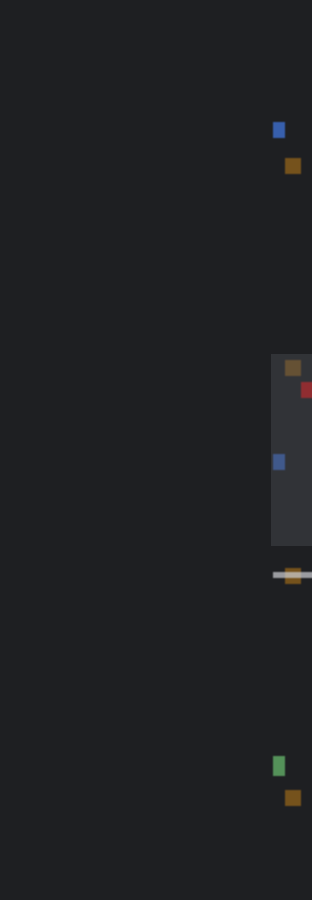
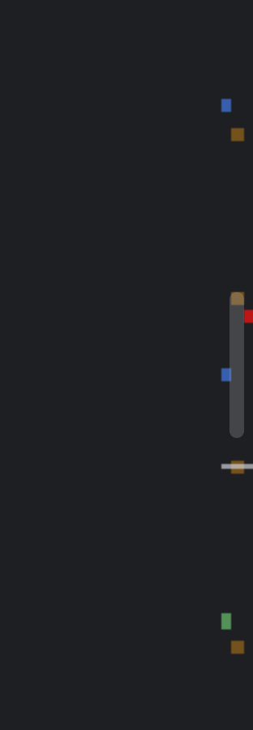
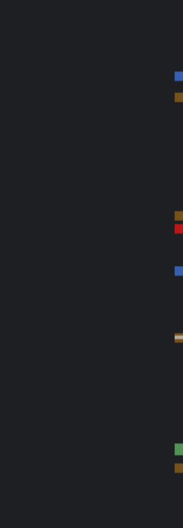
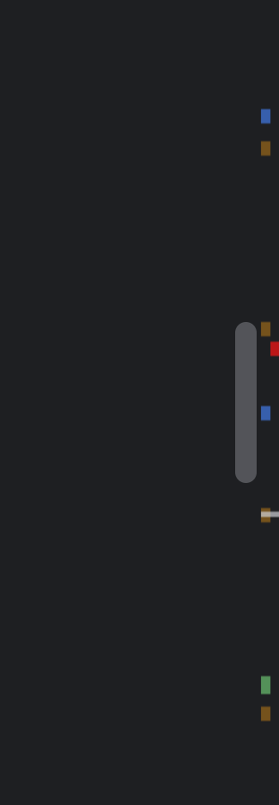
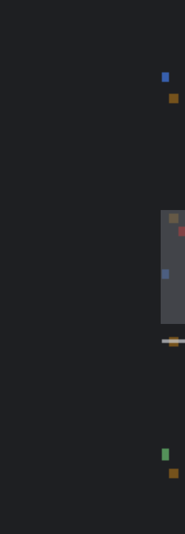
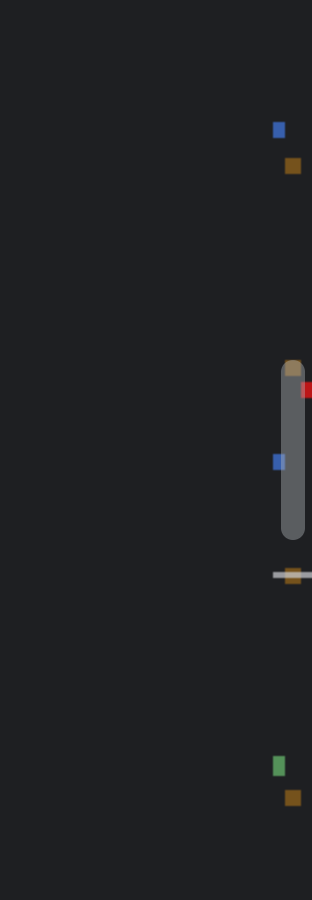
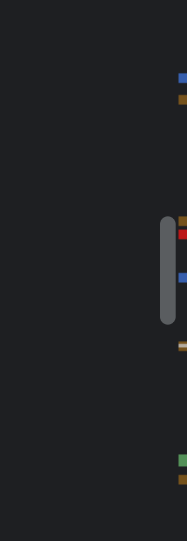
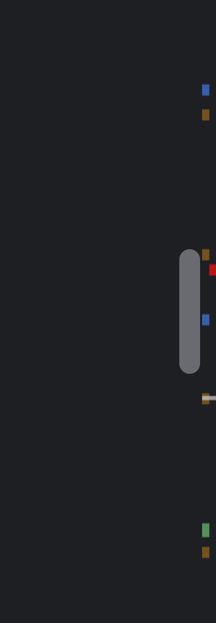
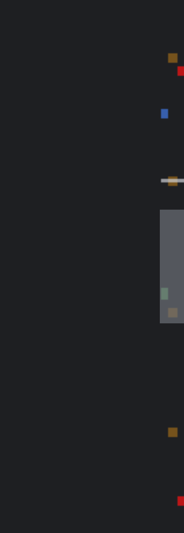
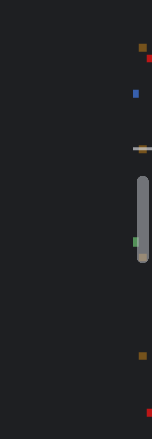
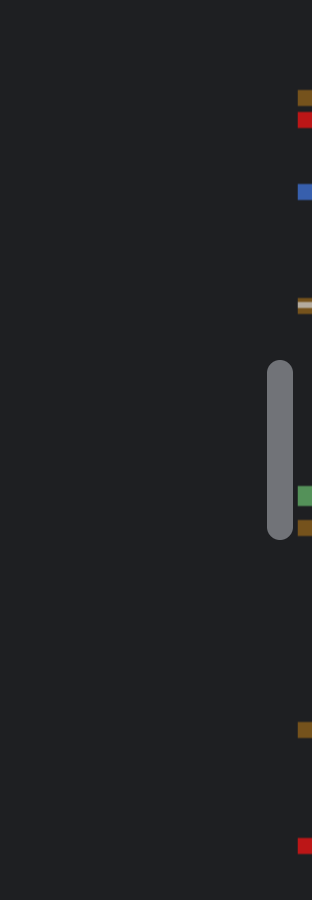
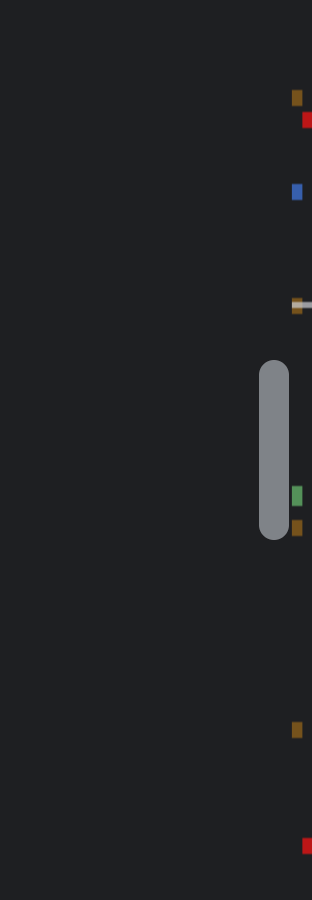
Breiten in CSS-Pixeln der App. Die Farben sind aus der Grauskala des neuen IntelliJ-Designs „Dark“ abgeleitet, die Codium schon nutzt (tokens.css): Grau 10 (#b4b8bf) halb durchsichtig, damit Text und Markierungen darunter durchscheinen. Auf der Editorfläche ergibt das etwa Grau 4, 6 und 7. Zum Vergleich mit IntelliJ siehe den Kasten unter der Tabelle.
| Heute (Monaco) | A · Kapsel über der Leiste | B · wie IntelliJ | C · Streifen, immer sichtbar | |
|---|---|---|---|---|
| Breite rechts gesamt | 14 px | 14 px | 16 px | 18 px |
| Greiffläche des Schiebers | 14 px | 14 px (ganzer Balken) | 10 px (links), dann 1 px Abstand | 10 px (links), dann 1 px Abstand |
| Schieber in Ruhe | 14 px, eckig | 6 px, Kapsel | 6 px, Kapsel (ausgeblendet) | 8 px, Kapsel |
| Darüberfahren / Ziehen | 14 px, eckig | 8 px | 9 px | 10 px |
| Waagrechter Schieber | 12 px, eckig | 12 px Greiffläche, Kapsel so hoch wie der senkrechte Schieber breit (in Ruhe und beim Darüberfahren) | ||
| Farbe in Ruhe | #4e515766 | #b4b8bf40 (wirkt wie #43454a, Grau 4) | #b4b8bf59 (wie #4e5157, Grau 5) | |
| Farbe beim Darüberfahren | #5a5d6399 | #b4b8bf66 (wie #5a5d63, Grau 6) | #b4b8bf80 | |
| Farbe beim Ziehen | #6f737aaa | #b4b8bf8c (wie #6f737a, Grau 7) | #b4b8bfa6 (wie #868a91, Grau 8) | |
| Verhalten | sichtbar, solange die Maus über dem Editor ist und kurz nach dem Scrollen; sonst nach 0,5 s ausgeblendet | immer sichtbar | ausgeblendet, solange nicht gescrollt wird; erscheint beim Scrollen, beim Darüberfahren über den rechten Rand und beim Ziehen | immer sichtbar |
| Markierungen | Übersichtsleiste unter dem Schieber, 14 px, drei Spuren: Git links, Suche Mitte, Fehler rechts | wie heute, unter der durchscheinenden Kapsel | eigener Streifen ganz rechts, 5 px, jede Markierung über die volle Breite | eigener Streifen ganz rechts, 7 px, zwei Spuren: links Git und Suche, rechts Fehler |
| Anklicken | Ein Klick neben den Schieber springt wie heute an diese Stelle, auch auf eine Markierung im Streifen. Bei B bleibt der Streifen auch mit ausgeblendetem Schieber anklickbar. | |||
| Spur, Schatten | keine Spur, Schatten an | keine Spur, kein Schatten | ||
Zum Vergleich: die Werte von IntelliJ. Das Theme „Dark“ des neuen Designs setzt keine eigenen Scrollbalken-Farben; es gelten die Vorgaben im Code von IntelliJ (ScrollBarPainter), halb durchsichtiges Grau ohne sichtbare Spur:
#a6a6a647 (Grau #a6a6a6 zu 28 %), wirkt auf der Editorfläche wie #444547. Das ist praktisch dieselbe Helligkeit wie bei A und B (#b4b8bf40, wirkt wie #444549).#a6a6a659 (35 %), wirkt wie #4e4e50; bei den Mac-Scrollbalken #8080808c, wirkt wie #545456. A und B werden beim Darüberfahren etwas heller (wie #5a5c61), damit der Unterschied zur Ruhe deutlich ist.#383838 zu 28 % bzw. 35 %; auf der dunklen Editorfläche ist er kaum zu sehen und in den Varianten weggelassen.Breiten, Verbreiterung beim Darüberfahren, Zeiten fürs Ausblenden und die Masse des Fehlerstreifens von IntelliJ sind nicht nachgelesen; die Masse der Varianten folgen dem Richtwert des Tickets (6 bis 8 px in Ruhe). Wer die Farben genau wie IntelliJ will, sagt es bei Frage 1; dann wird nur das Grau ausgetauscht.
Monacos Standard: 14 px breit, eckiger Schieber über der ganzen Breite, darunter die Übersichtsleiste mit drei Spuren. Der Schieber ist in Ruhe kaum zu sehen (#4e515766 auf #1e1f22) und verschwindet, sobald die Maus den Editor verlässt.
Die kleinste Änderung: Die Breite rechts bleibt 14 px, die Übersichtsleiste bleibt, wie sie ist. Darüber liegt eine schmale Kapsel (6 px, beim Darüberfahren 8 px), immer sichtbar. Die Kapsel liegt über der mittleren Spur (Suchtreffer); weil sie durchscheint, bleiben die Treffer darunter erkennbar, aber etwas gedämpft.
Der rechte Rand teilt sich: links die Kapsel (6 px, beim Darüberfahren 9 px) in einer 10 px breiten Greiffläche, ganz rechts ein eigener, 5 px schmaler Streifen für alle Markierungen. Der Schieber tritt zurück, solange nicht gescrollt wird, und erscheint beim Scrollen, beim Darüberfahren über den rechten Rand und beim Ziehen. Der Streifen bleibt immer sichtbar und anklickbar; nichts liegt über den Markierungen.
Dieselbe Aufteilung wie B, aber der Schieber bleibt stehen und ist etwas breiter (8 px, beim Darüberfahren 10 px) und kräftiger. Der Streifen ist 7 px breit und hat zwei Spuren: links Git-Änderungen und Suchtreffer, rechts Fehler. So bleiben Git und Fehler auf derselben Zeile nebeneinander statt übereinander.
Die Vergleichsansicht hat heute rechts zwei Dinge: den eckigen Schieber des rechten Editors und daneben Monacos eigene, 30 px breite Vergleichsübersicht (rot entfernt, grün neu) mit einem grossen, eckigen Kasten für den sichtbaren Bereich. In den Varianten bekommen beide Editoren dieselbe Kapsel wie der Code-Bereich; der Kasten der Vergleichsübersicht entfällt, ihre Farben bleiben als Markierungen. Bild in Ruhe, Maus über dem rechten Editor.
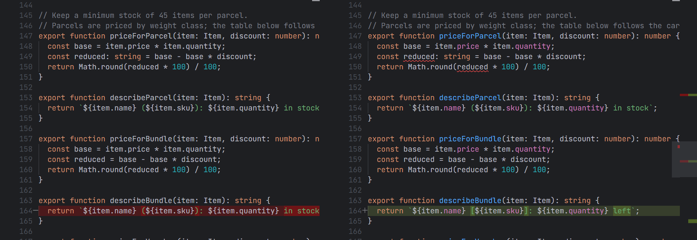
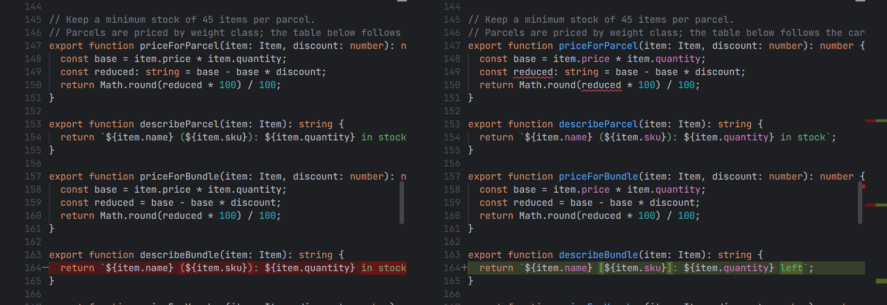
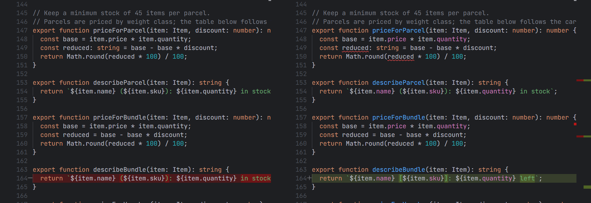
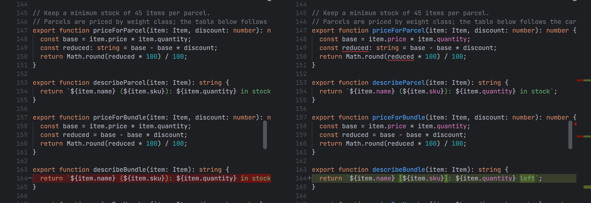
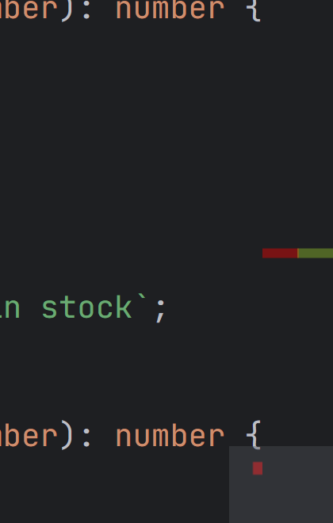
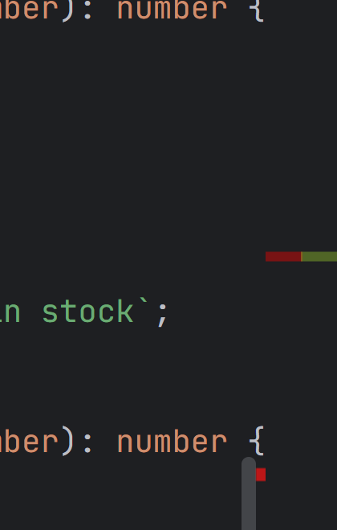
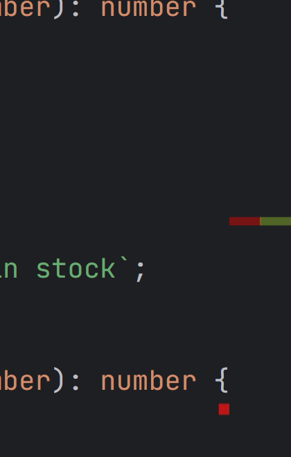
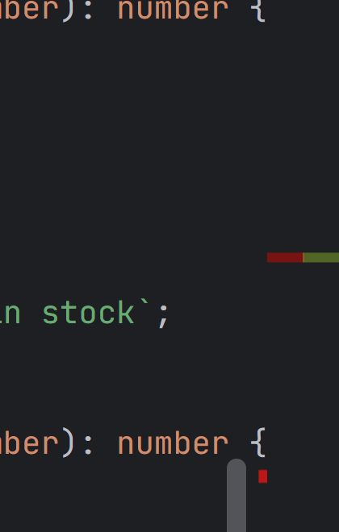
Diese Scrollbalken bleiben mit Ticket 28 unverändert und sehen heute anders aus als jede der Varianten. Will der Nutzer sie angleichen, wird das ein eigenes Ticket.
app.css hat keine dieser Flächen eine eigene Gestaltung.theme.ts.scrollbar-width: thin).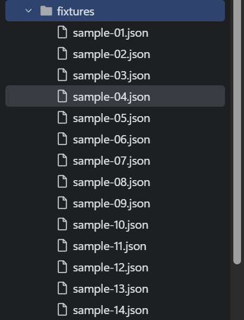
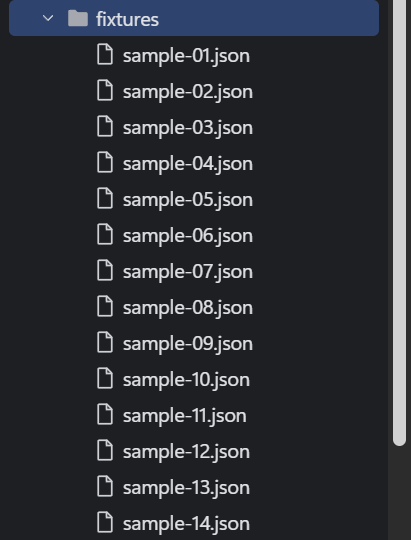
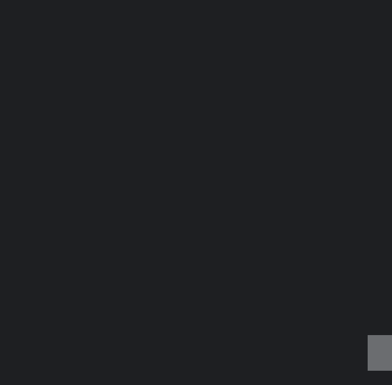
B kommt dem Vorbild am nächsten und hält den Rand am ruhigsten. Der Nutzer will den Code-Bereich „wie in IntelliJ“; dort ist der Schieber eine schmale Kapsel ohne Spur, die zurücktritt, wenn nicht gescrollt wird, und die Markierungen stehen in einem eigenen Streifen. Genau das zeigt B.
Aufwand beim Einbau: B braucht wie C ein paar Zeilen mehr als A, nämlich das Einblenden beim Scrollen (ein Ereignis je Editor) und den schmalen Streifen (Monacos Übersichtsleiste mit einer Spur, nur ganz rechts gezeichnet). Alles an einer Stelle für alle Editoren: Optionen in theme.ts, Farben und Masse als Design-Variablen in tokens.css, die Kapsel per CSS am Schieber.
docs/entwuerfe/28-scrollbalken/aufnahmen/aufnahmen.test.ts mit eigener Konfiguration daneben. Es läuft nicht in npm run test:ui, nur von Hand: node build.mjs, dann npx vitest run --config docs/entwuerfe/28-scrollbalken/aufnahmen/vitest.config.mts.launchCodium im Testmodus (verborgenes Fenster, Temp-Datenordner, abgeschirmtes Git). Maus und Bilder gehen über die Entwicklerwerkzeuge der App, nicht über den Desktop.updateOptions an den Editoren (gefunden über die internen Felder von React). Für die Bilder ist die Hover-Anzeige des Sprachservers ausgeschaltet, damit kein Fenster über dem Text steht. Den schmalen Streifen bei B und C zeichnet Monaco in voller Breite, das CSS staucht ihn auf 5 bzw. 7 px; mit einer Spur (B) bleibt das scharf.